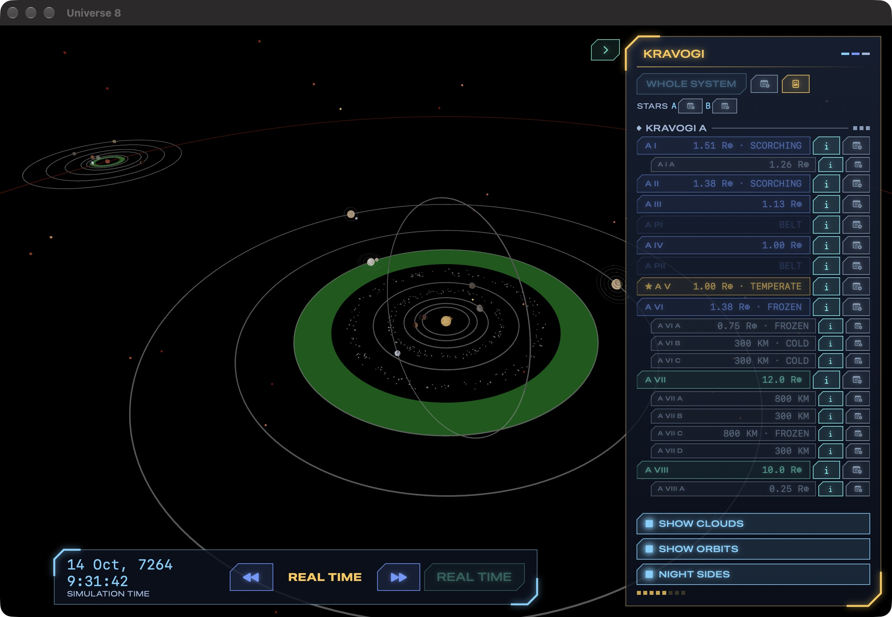
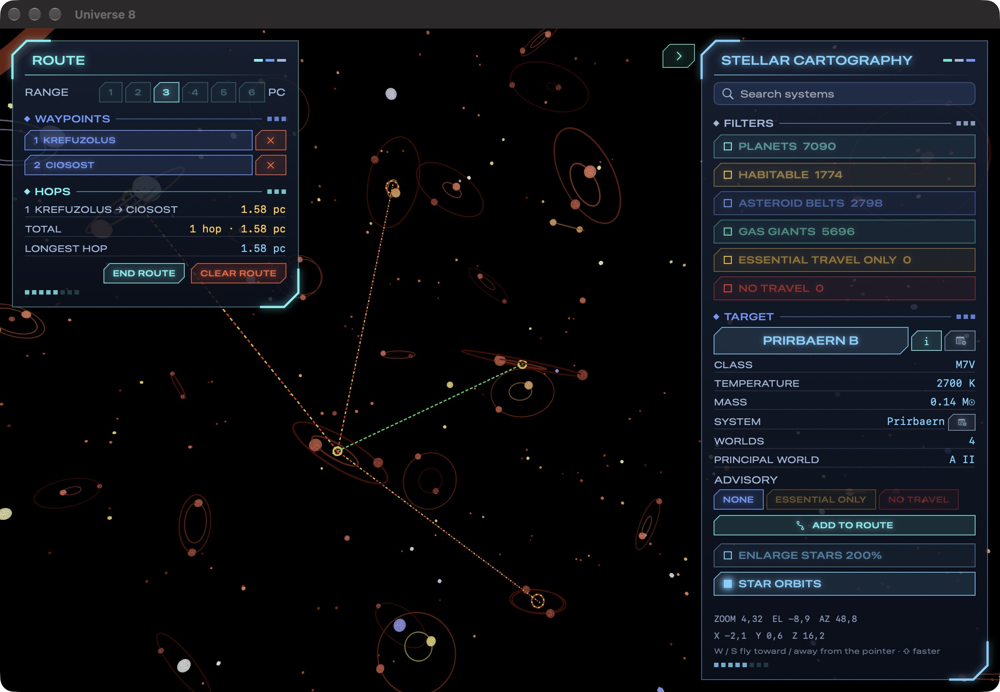
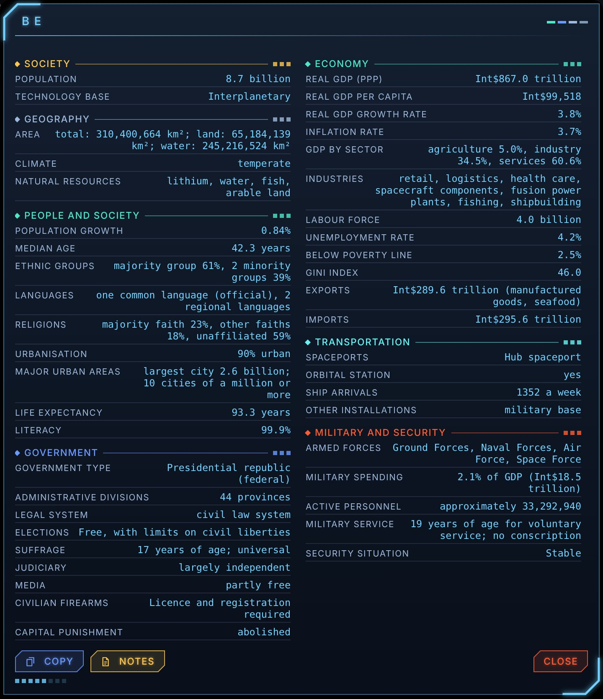
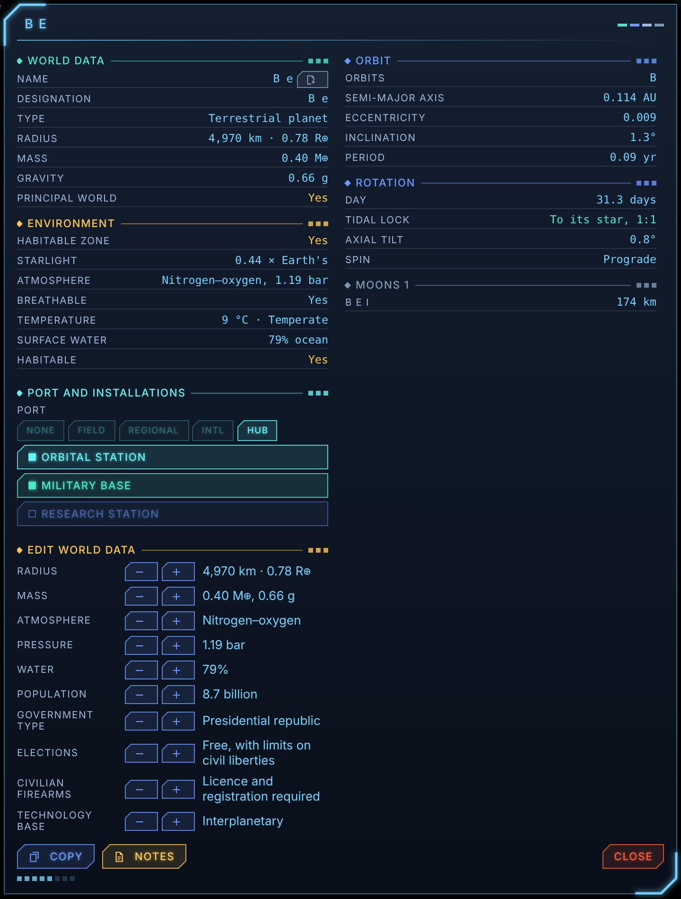
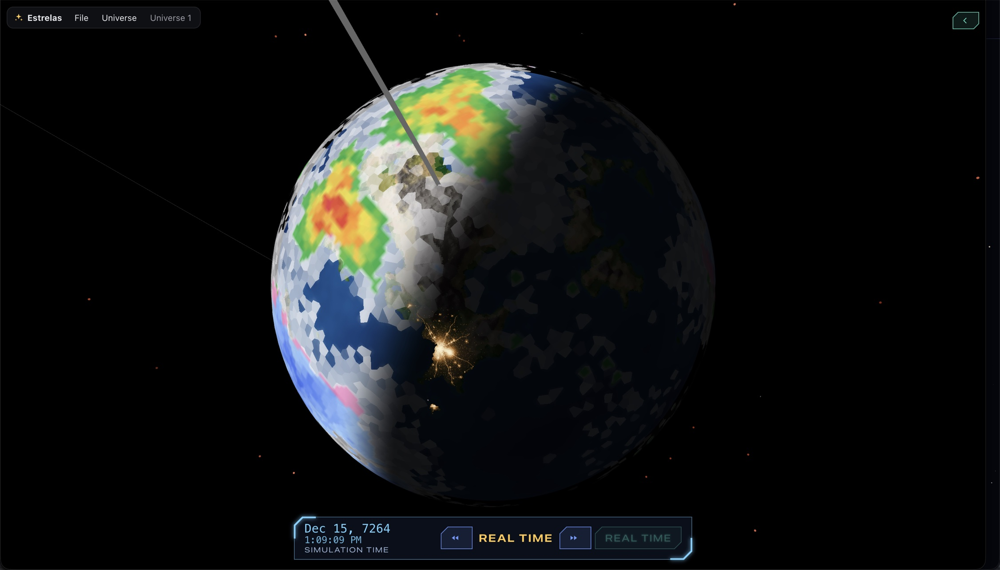
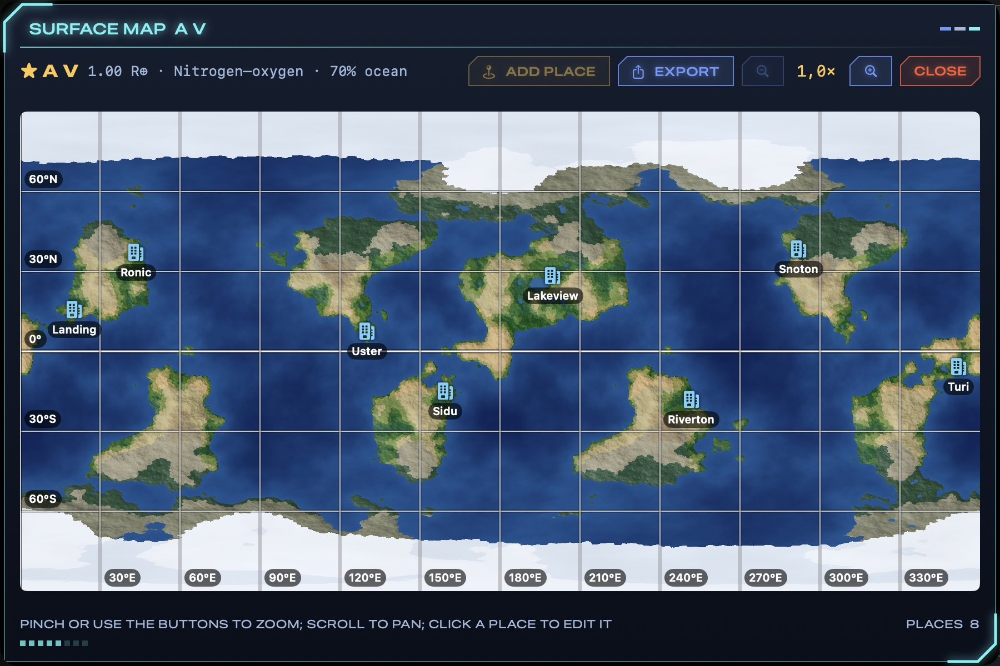
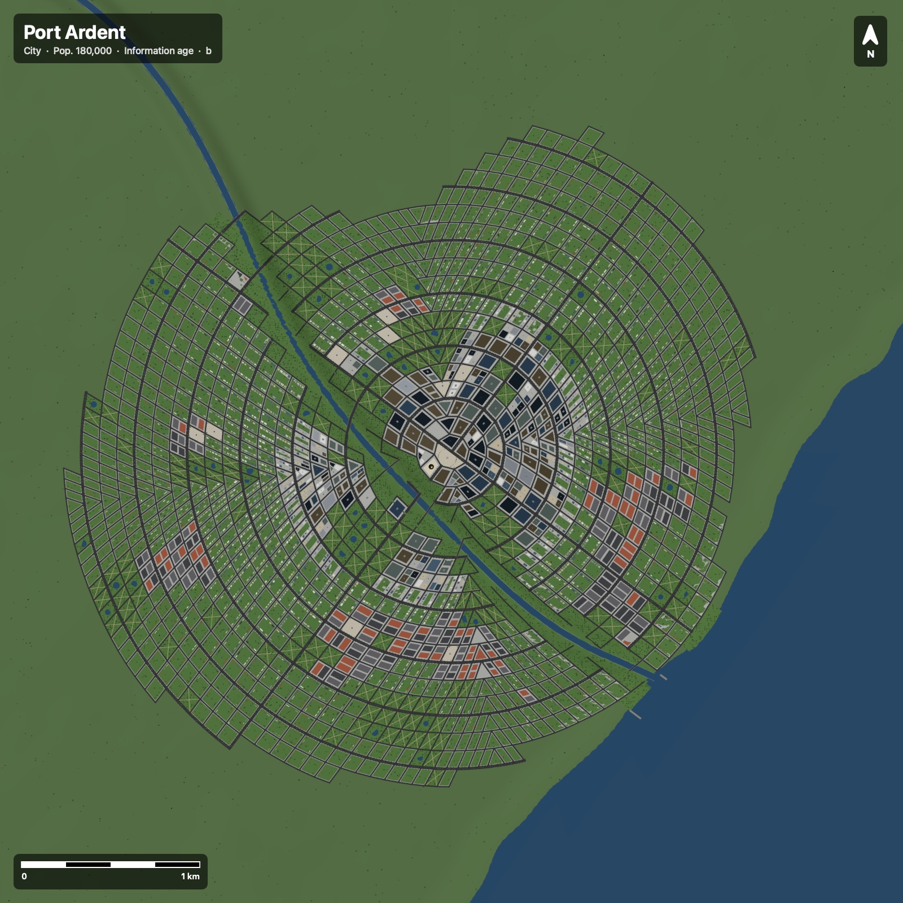
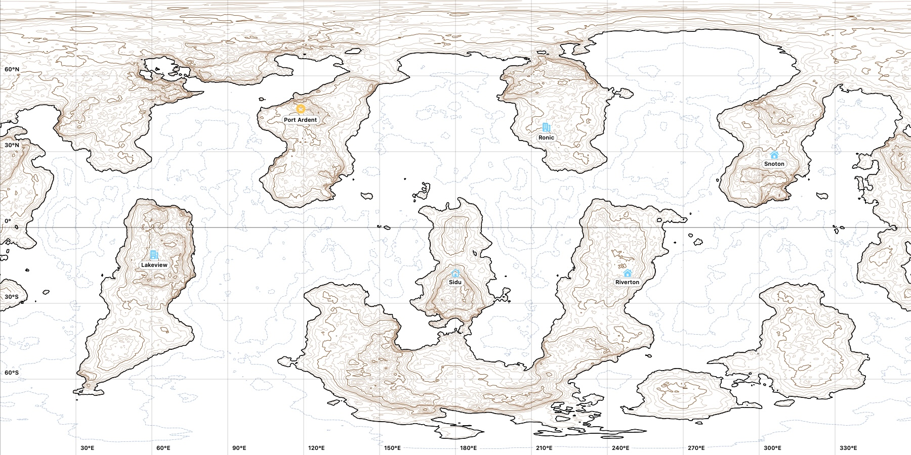

Estrelas builds an endless, explorable star map for your campaign: nebulae and star systems, every planet and moon in them, whole worlds with climates, cities, traffic and spaceports. Then it hands your players exactly the parts you choose to share.
Free for macOS, Windows and Linux.

The binary Kravogi system: eight planets and their moons around its main star, with the habitable zone in green.
Generate a universe in seconds, explore it in 3D, and keep every name, note and change you make. All of it is generated once, saved, and never shifts under you.
Fly in any direction and new sectors appear ahead of you, generated from your universe's seed. Every sector is saved, so the same seed always gives the same galaxy.
Red dwarfs to blue supergiants and hypergiants, brown dwarfs, white dwarfs, Wolf–Rayet and carbon stars, pulsars, magnetars and black holes, with variable and newborn stars among them. Glowing star-forming clouds, dark nebulae, planetary nebulae and supernova remnants drift between them.
Single, binary and multiple stars, with planets, belts, gas giants and moons, each in an orbit that makes sense for its stars. Moons are drawn in proportion, so a giant moon looks the part.
Every planet turns on its own tilted axis, with day lengths, tidal locks and backwards-spinning worlds. Night falls across the globe and city lights come on, while ships, aircraft and spacecraft come and go, and starships flash in and out of the system.
Pick your waypoints and set your ship's range in parsecs; Estrelas plots the route star by star and draws it across the map.
Rename stars and worlds, set spaceports, mark cities on the map and write notes anywhere. Notes are private until you choose to share them.
Settle a world in one click: cities and towns where people would build them, on coasts and rivers, ringed by farmland. Each one opens as a city map built for its terrain, climate and technology.
Export maps as images or PDFs, in colour or as topographic contour maps for the printer, flat or as a fold-up icosahedral world. Export the globe itself as a 3D model, ready for a 3D printer.
Every universe is a folder of plain, documented JSON. Copy it, back it up, or read it from your own tools and web pages.
Your universe starts as one sector of a hundred to three hundred systems and grows as you explore.

Every inhabited world comes with a full profile in the measures used for countries on Earth: its people, government, rights, economy, port and defence.

Behind every world is the physics to match, worked out from its star and its orbit.

Zoom from the star map to a single planet and it fills the screen: continents, oceans, ice caps, weather and clouds.

Every world unrolls into a detailed surface map, ready for your campaign's places.

Open any settlement and Estrelas lays it out street by street, from what surrounds it on its world.

Print a world the way a surveyor would draw it, and spend your ink on the land rather than a black page.

The game master builds the universe. The players explore it, and see only what the GM shares.
The full toolkit for building and running your campaign's universe.
The same star map, read-only, with nothing the GM hasn't revealed.
No spreadsheets, no dice tables open on the table. Just a universe ready to play.
Name your universe and roll a seed, or type one in to share a universe with another GM.
Fly the map, open systems, zoom to worlds. Rename, note and edit whatever the story needs.
Export for players and send the file. Only the notes you've shared go with it.
Plot the route, open the world's data sheet, and let your players see where they've landed.
Free for macOS, Windows and Linux. Each download has both Estrelas and Estrelas Player. Pick a seed and start charting.
In English, Português, Español, Deutsch and Français. Two interface styles: Estrela and macOS.